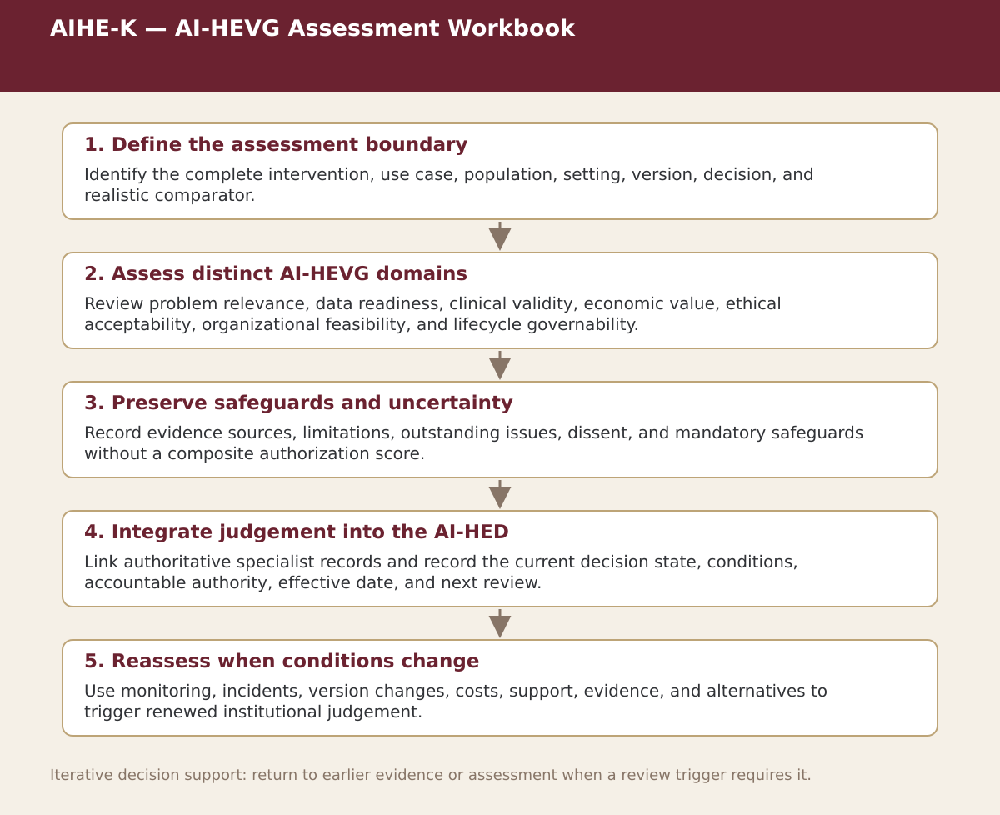

Supplemental specialist tool · Chapter 12
AIHE-K — AI-HEVG Assessment Workbook
Assess problem relevance, data, validity, economics, ethics, feasibility, lifecycle governance, safeguards, and final decision.

Process steps
| Step | Purpose | Review |
|---|---|---|
| 1. Define the assessment boundary | Identify the complete intervention, use case, population, setting, version, decision, and realistic comparator. | Accountable review; no automatic authorization |
| 2. Assess distinct AI-HEVG domains | Review problem relevance, data readiness, clinical validity, economic value, ethical acceptability, organizational feasibility, and lifecycle governability. | Accountable review; no automatic authorization |
| 3. Preserve safeguards and uncertainty | Record evidence sources, limitations, outstanding issues, dissent, and mandatory safeguards without a composite authorization score. | Accountable review; no automatic authorization |
| 4. Integrate judgement into the AI-HED | Link authoritative specialist records and record the current decision state, conditions, accountable authority, effective date, and next review. | Accountable review; no automatic authorization |
| 5. Reassess when conditions change | Use monitoring, incidents, version changes, costs, support, evidence, and alternatives to trigger renewed institutional judgement. | Accountable review; no automatic authorization |
Status. This process map is a navigation and decision-support aid. Adapt it to the relevant jurisdiction, institution, population, workflow, technology version, evidence cut-off, and accountable authority.